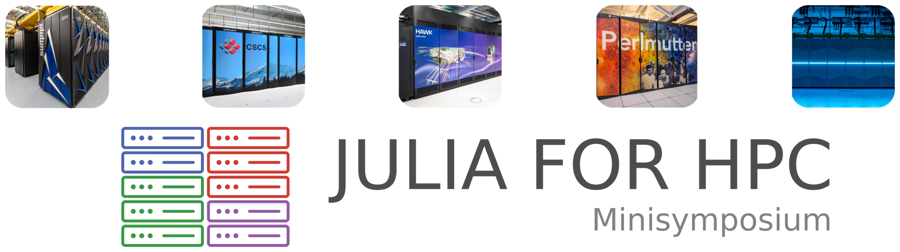

Don't miss the Julia for HPC minisymposium at PASC 22 conference on Wednesday June 29 2022 in Basel, Switzerland.
Julia for HPC
Ludovic Räss & Boris Kaus
The flow of large amounts of data and the constant increase in spatiotemporal model resolution pose new challenges in scientific software development. Then, high-performance computing (HPC) resources massively rely on hardware accelerators such as graphical processing units (GPUs) that need to be efficiently utilised, representing an additional challenge. Performance portability and scalability as well as fast development on large-scale heterogeneous hardware represent crucial aspects in scientific software development that can be leveraged by the capabilities of the Julia language.
The goal of this minisymposium is to bring together scientists who work on or show interest in large-scale Julia HPC development, including but not restricted to software ecosystems and portable programming models for development; GPU computing multiphysics solvers, and more. The selection of speakers with expertise spanning from computational to domain science, offers a unique opportunity to learn about the latest development of Julia for HPC to drive discoveries in Earth system sciences and Geodynamics using the next generation of integrated climate models and 3D lithospheric models at unprecedented resolution.
Presentations
To learn more about the presentations, browse the schedule of our minisymposium. In a nutshell:
| Time | Title | Presenter |
|---|---|---|
| 11:00 - 11:30 CEST | Building Composable Infrastructure for HPC and GPU Computing in Julia | Valentin Churavy (MIT) |
| 11:30 - 12:00 CEST | Development of Multi-GPU Solvers for Nonlinear Multi-Physics with Julia | Samuel Omlin (CSCS) |
| 12:00 - 12:30 CEST | ClimaCore.jl: A New Flexible and User-Friendly Dynamical Core | Valeria Barra (Caltech) |
| 12:30 - 13:00 CEST | Resolving Complex Three-Dimensional Stress Distribution in Earth’s Lithosphere using a Julia Multi-GPU Framework | Emilie Macherel (Unil) |
Julia for HPC is happening now 🚀 !